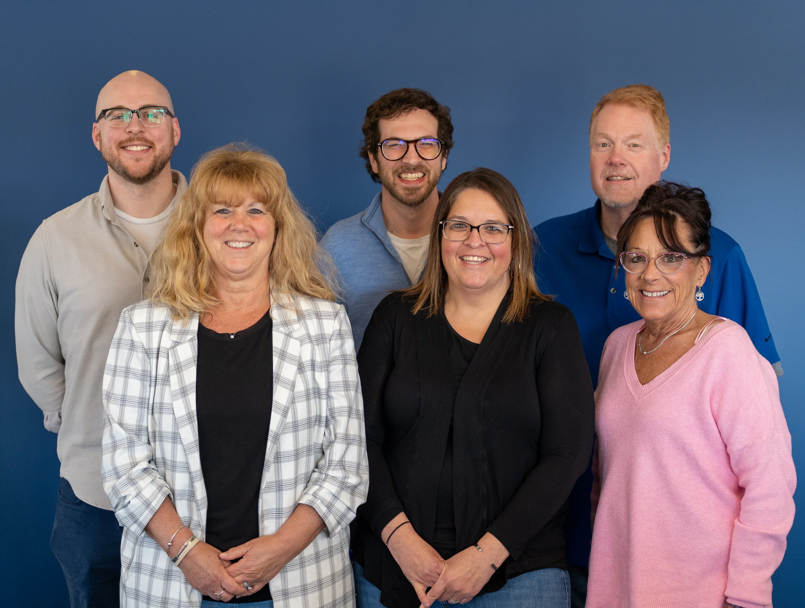

Blue Cross Vermont · 2026
Real people, useful information, and the systems that help both travel.
My work at Blue Cross Vermont spans community photography, portraits, social content, video, digital strategy, and practical technology improvements.
Community health and public events
I photograph the people doing the work, from press conferences and workplace wellness programs to community races and outdoor events.



Flight Paths: Emma at BETA
I produced this story about how one person found her way into Vermont’s growing aviation sector. The video is embedded from YouTube.
Digital operations
I also work behind the content: improving account security, modernizing platform ownership, documenting workflows, connecting Brand and Engagement with cybersecurity, and building a clearer foundation for social publishing and measurement.